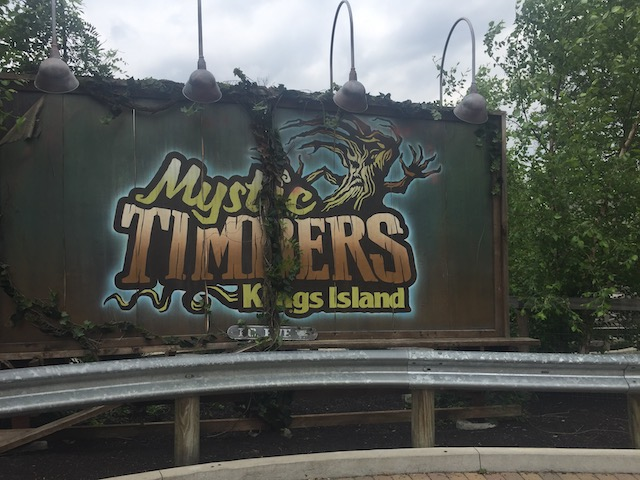

| |
Mystic Timbers Review

We're here at Kings Island. Today, we're here to review Mystic Timbers, one of the better GCIs we've ridden and a really good wooden coaster. Now if you've seen the promotion for this ride, one of the big things this ride came out with was the big mystery at the end of the animated POV they released, where they showed the ride. Then it stopped, before going into a shed, and then the big mystery of the ride became "What's in the Shed?". Well, that will be a mystery no more. We are going to find out just what is in the shed. So get in the cars, pull down the lap bar, and away we go. We go around a turn, through a couple dips, and begin climbing the lifthill. While climbing the lifthill, we're repeatedly given warnings to go back, turn around, and go play our video games. Blah blah blah. Who cares. Eventually, they give us one final warning. "Whatever you do. Don't go in the shed!" OK. Whatever. I'm busy noticing that Diamondback is really big (and very fun). We then focus on the coaster we're riding, Mystic Timbers, and go down the first drop. It's a curving first drop, and it's pretty fun. Gives us some good speed. But this is just standard GCI. Nothing special so far. We then go up a small hill, and around a left turn. Gee. This is really reminding me of another GCI. Another one that I really like. OK. It's very similar to Prowler. Hell, the first drop, and this turn seem damn near identical. Hey. I love Prowler, so if you want to go in the Prowler direction, fine with me. After that, we then head down a small drop, get a decent amount of airtime. And from here, we just venture out into the woods. Gee. That seems to be a common theme with coasters at Kings Island. Beast. Diamondback. And now Mystic Timbers. All just venture into the woods. I like that theme. But now I'm rambling. We go over a small bunny hop, there's some airtime. We bounce over another bunny hop, but then go into an S Curve. Ooh. Some laterals. I like that. We go around another hill with a curve in it. Some more cool laterals. Another airtime hill with laterals comes, and I'm really liking this pattern. At this point, we go into a turnaround and...OH F*CK!!! IS THAT THE SHED!!!? *breathes a sigh of relief* Not to worry. It's just a tunnel. We go out, around a turn, and the lateral bunny hop stretch home in the woods can now go foreward. So yeah. Over two bunny hops, that's two spots for airtime. WEE!!! Go through a couple turns, and get some laterals. Go through another bunny hop, and then head into a double up. Nothing insane, but there's a little bit of GCI airtime here that's pretty cool. We then come into the brakerun. We have arrived. This is it. The shed. A warning then goes off, and tells us "This is a restricted area. Don't go in the shed." But then some distortion goes on, mixes up the message, and then some demonic voice tells us to "Go in the shed. Go in the shed." Surely, we aren't going to listen to some creepy demonic voice over SEVERAL warnings not to go in the shed. Right!? OF COURSE NOT!! WE'RE ALL A BUNCH OF IDIOTS!!! Didn't you learn that back in November 2016!? OF COURSE WE'RE GONNA LISTEN TO SOME CREEPYASS DEMON OVER THE RATIONAL HUMANS!!! Now warning. I am going to reveal what's in the shed. So WARNING: COASTER SPOILERS AHEAD!!! We go into the shed. So far, it just looks like any ordinary shed. It seriously looks like just the regular old maintenence shed. OK. Not that. There's no coaster parts in here. But it looks like something in your actual backyard shed. Please tell me that something cool is going to happen in here. Eventually, we just stop in the shed. The only thing going on is music. There's a handful songs that they play, but the only one that stood out to me was "Cars" by Gary Numan. What!? Why is Gary Numan playing!? Is this supposed to be the terrifying surprise in the shed!? Bad move Kings Island, I like Gary Numan, and don't give a sh*t about any of the other songs, whos artists I don't even know. Now if Justin Beiber was the surprise in the shed, and they forced you to hear his music, his pre-puberty music back when it was seriously ear-bleedingly bad instead of now where it's just standard generic mediocre bad, but at least tolerable enough to hear in a mall without cringing, well, THEN the shed would actually be terrifying LOL. Oh sh*t! Something is happening. The music stops. The lights flicker. The train starts moving again. We roll around a turn, and TREE MONSTER!!! On a giant screen, we see TREE MONSTER!!! And then it's over. We're now back in the station. GAH!!!! YOU F*CKING COCKTEASE!!!! Seriously, that is one of the BIGGEST cocktease endings. Seriously, the big cocktease endings are this, California Mummy, and Adventure Express....at Kings Island? GOD DAMN IT!!! YOU HAVE TWO MAJOR COCKTEASE ENDINGS!!! IN THE SAME PARK!!! You'd think you'd learn after Adventure Expresss! Now, I'm not opposed to the tree monster in general. I get that they don't have a Disney style budget and this is what they could've done. But...couldn't they have had the shed as a sort of mid-course brakes, and then had more ride as a sort of bonus or surprise. I'd be singing praises if they did that. But just ending after showing some dumb monster on a movie screen, I can't help but feel ripped off. Even with knowing that Cedar Fair doesn't have the budget to do anything really impressive, just ending leaves an annoyed sour taste in my mouth. Which is a shame as the coaster itself is really good. Definetly one of the better GCIs, and I do love how it just goes out into the woods. I definetly recommend riding Mystic Timbers if at Kings Island. It's without a doubt their best woodie. Yes. I said it. It's better than the Beast. Sorry, not sorry.
8/10
Location: Kings Island
Opened: 2017
Built by: Great Coasters International
Last Ridden: June 21, 2021
Mystic Timbers Photos



Home
|